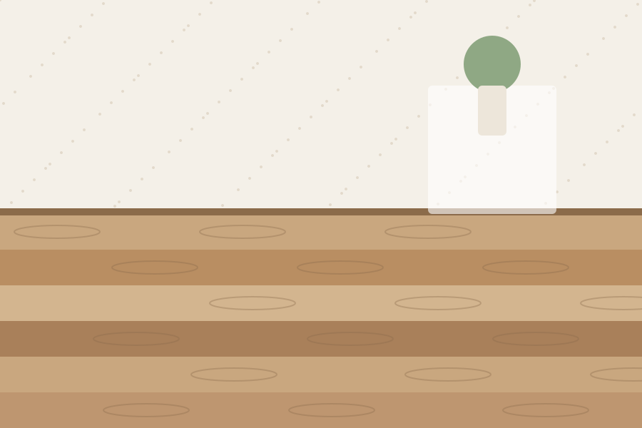
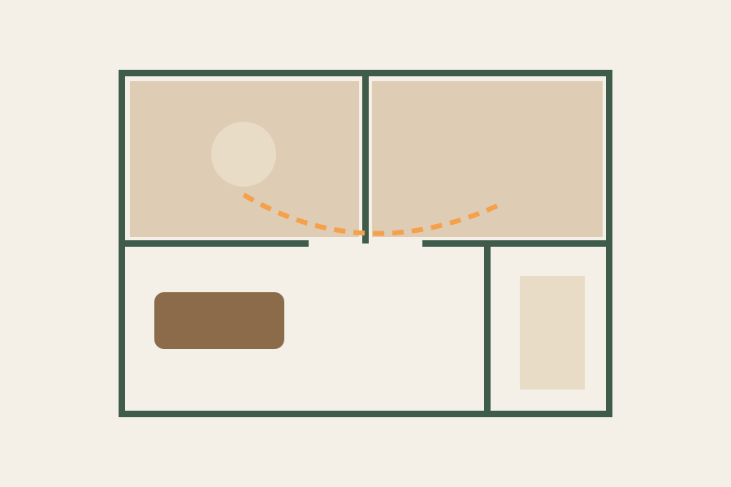
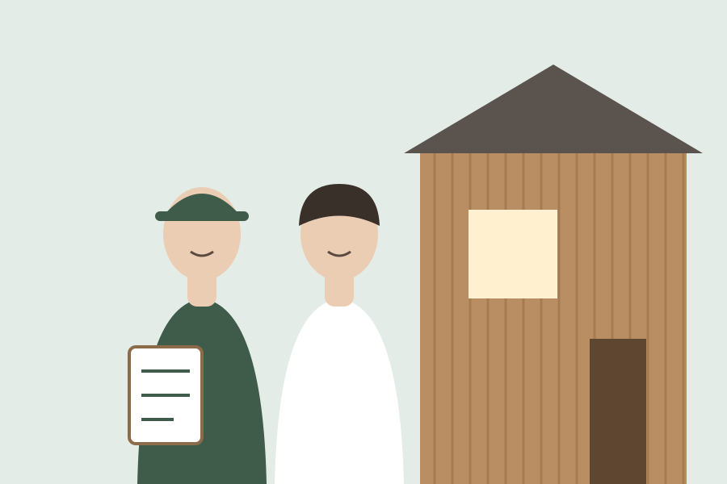

FEATURE
家づくりの特徴
住む人の暮らしから考える、
木の家づくり。
私たちが大切にしているのは、素材・間取り・建てたあとの関係の3つです。どれも、家族が長く心地よく暮らすために欠かせないものだと考えています。
POINT 01
地元の木を使った
自然素材の家
構造材から床材まで、県内で育った木を使っています。無垢の床は足ざわりがやわらかく、漆喰の壁は湿気を吸ったり吐いたりして室内を快適に保ちます。
- 構造材
- 県産スギ・ヒノキ
- 床材
- 無垢フローリング（標準）
- 内壁
- 漆喰塗り（標準）

POINT 02
子育て世帯に寄り添う
間取り
キッチンから洗面・物干しまでをひと続きにした家事動線や、子どもの成長に合わせて仕切れる部屋など、今と10年後の両方を見すえてプランをつくります。
打ち合わせでは、平日の朝と休日の過ごし方から伺います。

POINT 03
建てたあとも
安心のアフター
お引き渡し後も定期点検に伺います。施工エリアを車で30分圏内にしぼっているので、困ったときにすぐ駆けつけられます。
- 6か月点検
- 1年点検
- 2年点検
- 5年点検
- 10年点検
FLOW
家づくりの流れ
- 1ご相談ご要望や予算を伺います
- 2プラン提案間取りと見積りをご提示
- 3ご契約内容にご納得いただいてから
- 4着工現場見学もいつでも可能
- 5お引き渡し住まい方をご説明します
- 6定期点検建てたあとも長いお付き合い